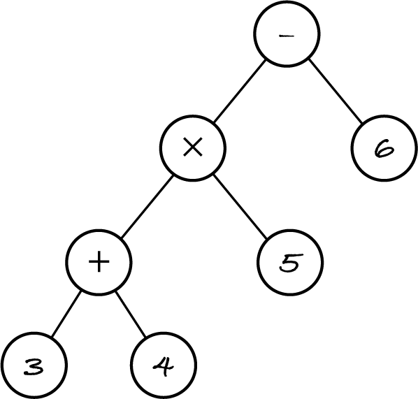

16.1. Binary tree
In M269 we focus on a restricted form of rooted trees: binary trees. They can be defined recursively:
A binary tree is either empty or it consists of an item, called the root, and two binary trees, called the left subtree and the right subtree.
The next figure shows a binary tree that represents the expression (3+4)×5 − 6. Rooted trees are usually depicted from the root downwards, unlike natural trees.
The root is the subtraction operator. The left subtree’s root is the multiplication operator. The right subtree consists of root 6 and two empty subtrees. Why the expression is represented in this particular way will become clear in the next section, when we evaluate such expression trees.
Many examples, like the folder hierarchy on a disk, can’t be modelled as binary trees, because a folder can have more than two subfolders. But the concepts and techniques for binary trees can be extended to rooted trees with any number of subtrees.
16.1.1. Terminology
A node consists of an item and the references to the left and right subtrees. The size of a tree is the number of its items (or nodes); the example tree has size 7.
A node A is the parent of node B, and B is the left or right child of A, if B is the root of the left or right subtree of A, respectively. For example, node 6 is the right child of the subtraction node, which is also the parent of the multiplication node.
Every node has exactly one parent, except the root, which has no parent. A leaf is a childless node, i.e. both its subtrees are empty. In the example, the leaves are the integer literals.
A node A is an ancestor of node B, and B is a descendant of A, if A is a parent of B or A is an ancestor of the parent of B. For example, the ancestors of node 3 are addition, multiplication and subtraction. A subtree rooted at a node A consists of A and all its descendants. For example, the subtree rooted at the addition node consists of it and the descendants 3 and 4.
The level or depth of a node is the number of its ancestors. The root has depth 0 because it has no ancestors. In the example tree, node 5 and the addition node have depth 2; nodes 3 and 4 are at level 3.
The height of a tree is the number of levels. The example tree has four levels, so its height is 4. An empty tree has no levels, so its height is 0.
The height of a non-empty tree is one more than the largest depth of all nodes. The largest depth in the example tree is 3 (for the left-most leaves), so the height is 4. A tree with only one node (the root, at depth 0) has height 1.
Info: Many authors define the height of the empty tree as −1 and the height of a non-empty tree as the largest depth.
A binary tree is perfect if all its levels are full, i.e. all parents have two children and all leaves are at the same depth. An empty tree and a tree with just one node are perfect trees. The left-hand tree in the next figure is also perfect.
Exercise 16.1.1
Consider the following binary trees, which represent, from left to to right, expressions (3+4)×(5-6), 3+((4×5)−6) and (3+(4×5))−6.
For each tree:
State its size and height.
List the nodes at level 2.
Explain if the multiplication node is a descendant of the subtraction node.
16.1.2. ADT and data structure
The binary tree ADT has the following operations:
Operation |
Effect |
Algorithm in English |
|---|---|---|
new |
create a new empty binary tree |
let t be an empty binary tree |
join |
create a tree from item i and trees l and r |
join(i, l, r) |
root |
obtain the root item of non-empty tree t |
root(t) |
left |
obtain the left subtree of non-empty tree t |
left(t) |
right |
obtain the right subtree of non-empty tree t |
right(t) |
is empty |
check if a given tree is empty |
t is empty |
The join operation puts together a tree while the root, left and right operations take it apart. We have root(join(i, l, r)) = i, left(join(i, l, r)) = l and right(join(i, l, r)) = r. This is the same approach as for composing sequences with the prepend operation and decomposing them with the head and tail operations.
Note: When designing a data type made of several parts, include operations to join and to separate the parts.
Instead of writing in one go a large class with many methods, I define a data structure and add operations one by one, as standalone functions. Introducing operations incrementally makes it easier for me to explain (and for you to learn) how binary trees work.
The binary tree data structure follows the recursive definition: a tree node has an item and points to two children nodes. A binary tree is like a bifurcating linked list. I represent an empty tree by a node without a root or subtrees.
[1]:
# this code is also in m269_tree.py
class Tree:
"""A rooted binary tree."""
def __init__(self) -> None:
"""Create an empty tree."""
self.root = None
self.left = None
self.right = None
The class could be named BinaryTree or TreeNode but since we’re using only one kind of tree, I prefer a shorter name.
Let’s implement the ADT operations. The new operation is provided by the constructor. To obtain the root, left and right subtrees we can simply access the corresponding attribute because we’re using the class as the raw data structure. The remaining operations are:
[2]:
# this code is also in m269_tree.py
def is_empty(tree: Tree) -> bool:
"""Return True if and only if tree is empty."""
return tree.root == tree.left == tree.right == None
def join(item: object, left: Tree, right: Tree) -> Tree:
"""Return a tree with the given root and subtrees."""
tree = Tree()
tree.root = item
tree.left = left
tree.right = right
return tree
We construct trees bottom-up, starting from the leaves and joining two subtrees. Here’s how to construct the 3+4 subtree of Figure 16.1.1.
[3]:
THREE = join(3, Tree(), Tree()) # a leaf has empty subtrees
FOUR = join(4, Tree(), Tree())
SUM = join("+", THREE, FOUR) # the subtree for 3 + 4
To create trees more easily, let’s define a convenience operation.
[4]:
# this code is also in m269_tree.py
def leaf(item: object) -> Tree:
"""Return a node with the item and empty subtrees."""
return join(item, Tree(), Tree())
# The leaves for all the example trees.
THREE = leaf(3)
FOUR = leaf(4)
FIVE = leaf(5)
SIX = leaf(6)
Now we can create the three trees in Figure 16.1.2, named after the order in which the plus, minus and times operators appear in the join arguments.
[5]:
# this code is also in m269_tree.py
TPM = join("*", join("+", THREE, FOUR), join("-", FIVE, SIX)) # (3+4)*(5-6)
PMT = join("+", THREE, join("-", join("*", FOUR, FIVE), SIX)) # 3+((4*5)-6)
MPT = join("-", join("+", THREE, join("*", FOUR, FIVE)), SIX) # (3+(4*5))-6
I can reuse the same leaf objects for different trees because they won’t be modified (hence the uppercase names).
Exercise 16.1.2
Write the Python expression for the tree in Figure 16.1.1, for expression ((3+4)×5) − 6.
[6]:
%run -i ../m269_tree
pass
Before we move on, here’s one more operation to illustrate accessing the subtrees.
[7]:
# this code is also in m269_tree.py
def is_leaf(tree: Tree) -> bool:
"""Return True if and only if the tree is a single leaf."""
return not is_empty(tree) and is_empty(tree.left) and is_empty(tree.right)
[8]:
is_leaf(THREE)
[8]:
True
[9]:
is_leaf(Tree())
[9]:
False
[10]:
is_leaf(TPM)
[10]:
False